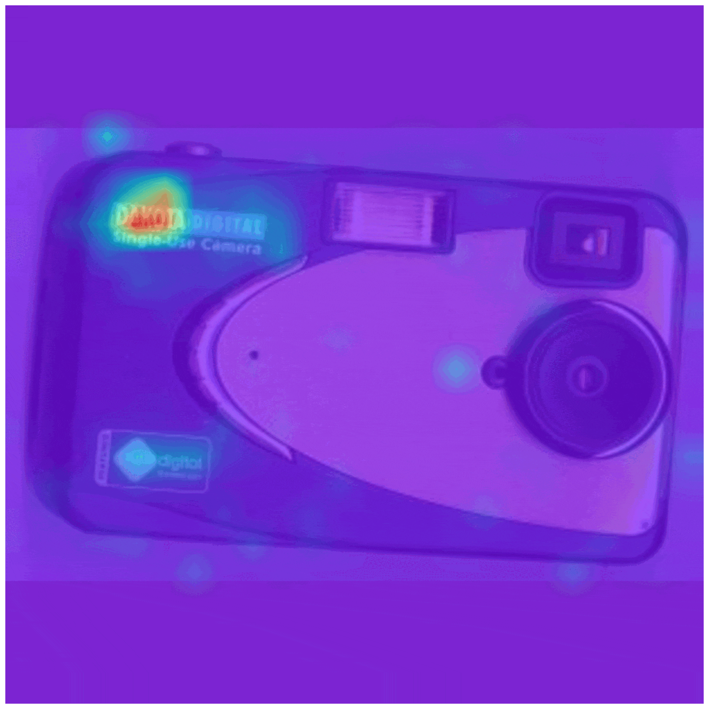
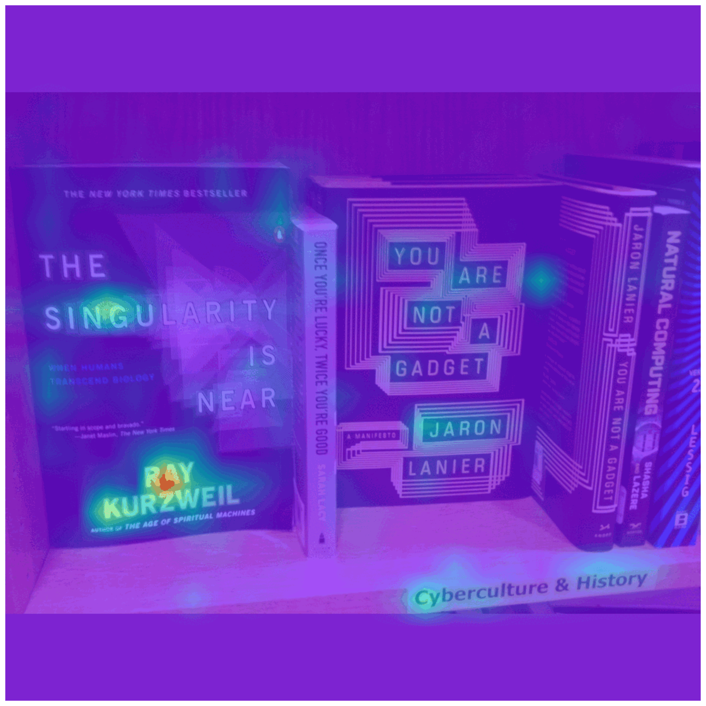

Attention Map Visualization

Question: What is the brand of this camera?
Answer: Dakota digital

Question: What is the number on the runner in middle?
Answer: 57859

Question: Who wrote this book?
Answer: Ray Kurzweil